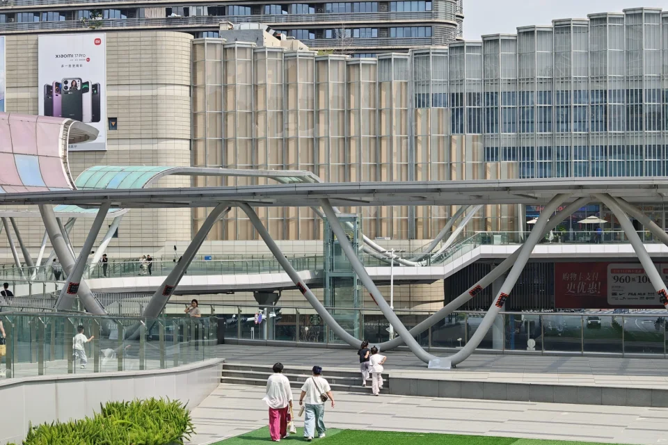

关于这个页面
这个网页是一个独立的生活展示站，展示我更轻松、真实和多元的一面。
01 / Sports
体育
运动是我保持状态和调整节奏的必备方式，无论是参与还是观看，都带来一种稳定的能量。 由于家里订阅了百事通，从小我就关注与参与各种体育活动， 比如跑步、健身、足球、游泳等，多少都有点涉猎。
进入页面
02 / Art
艺术
我喜欢音乐、历史、电影、故事等，也乐于付费去参加此类活动。 艺术对我来说不仅仅只是放松，更是一种观察情绪心理、表达厚重思想的窗口。
进入页面
03 / ACG
二次元
17年入宅以来，ACGN 给我提供了另一个世界。 曾经，它们是我用来逃避生活、为赋新词强说愁的工具；现在则是我真正热爱，能够交流思想、与人社交的完美空间。 我喜欢作品中的角色塑造、画面展示、声音表达，也会思考其中蕴含的深层含义。
进入二次元页面 照片：城市手记 · 苏州相城天街
照片：城市手记 · 苏州相城天街
Anime Favorites
去看看城市榜单 ↗
我的动画老婆们
把喜欢的角色留在生活里。原画半身取景，点击看看她的故事和素材出处。
角色相册加载中…
04 / Travel
旅游
作为非传统Otaku，我也喜欢旅行，因为它能给我一个观察另一个“世界”的人文、自然， 带来和我的《日常》完全不同体验的感觉。这一点令我着迷~ 当然，谁说各类新的体验不算另一种旅游呢？
进入旅游页面
照片：城市手记 · 苏州相城天街生活相册
一些轻松的生活片段，可以之后慢慢替换成自己的照片。